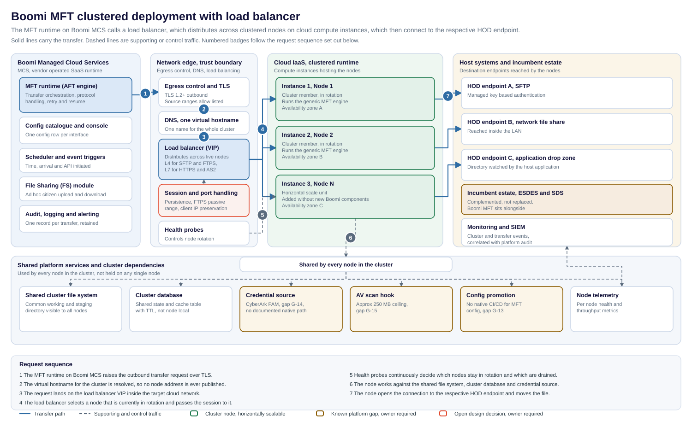

{kind=link}
{kind=link}
How to use this page
- The bar at the very top downloads every deliverable produced for this request. The zip contains all of them together.
- The architecture note (.docx) is the reviewable document. It carries the diagram, the component table, the load balancing analysis and the full decision list, and is the version to circulate for Design Authority comment.
- The decision register (.xlsx) is the working artefact. Three tabs: Decision register, Assumption log and Described in brief. Edit the Status and Owner columns only; the counts at the foot of the first tab recalculate on their own.
- The draw.io source is the editable diagram. Open it live in the browser here: open in the draw.io viewer. Nothing is exported by hand, so the SVG, PNG and draw.io file are all emitted from one geometry model and cannot drift apart.
- Read section What was described against what has been assumed before treating anything here as agreed. Only four statements came from the brief. Everything else is a pattern-standard addition awaiting confirmation.
Architecture diagram

Solid lines carry the transfer. Dashed lines are supporting or control traffic. Amber boxes are known platform gaps, the red box is an open design decision.
Architecture as described
The shape described is a straight left to right path.
- The MFT runtime, hosted on Boomi Managed Cloud Services, makes the call outbound.
- That call reaches a load balancer.
- The load balancer calls internally to the compute instances in the cloud infrastructure where the runtime nodes are present.
- The node then connects to the respective HOD endpoint.
Everything else in the diagram is a supporting element added to make that path deployable. The two are kept separate below so the distinction is not lost.
Request sequence
- The MFT runtime on Boomi MCS raises the outbound transfer request over TLS.
- The virtual hostname for the cluster is resolved, so no individual node address is ever published.
- The request lands on the load balancer virtual IP inside the target cloud network.
- The load balancer selects a node currently in rotation and passes the session to it.
- Health probes continuously decide which nodes stay in rotation and which are drained.
- The node works against the shared file system, cluster database and credential source.
- The node opens the connection to the respective HOD endpoint and moves the file.
Component responsibilities
| Component | Responsibility | Notes |
|---|---|---|
| MFT runtime on MCS | Transfer orchestration, protocol handling, retry and resume | Vendor operated. Not in the customer change control path. |
| Config catalogue | One configuration row per approved interface | Holds the config over construction principle. No new component per interface. |
| DNS virtual hostname | One name representing the whole cluster | Node addresses are never published, which is what makes nodes replaceable. |
| Load balancer | Distributes sessions across nodes in rotation | Layer and TLS posture are unresolved, see D-CL-03 and D-CL-04. |
| Health probes | Decide which nodes are in rotation | Probe depth is unresolved, see D-CL-08. |
| Cluster nodes | Execute the transfer and connect to the endpoint | Three shown illustratively. Actual count unresolved, see D-CL-11. |
| Shared file system | Common working and staging directory | Availability posture unresolved, see D-CL-09. |
| Cluster database | Shared state and cache with TTL | Required because the built in Cache shape is node local and unusable in a cluster. |
| Credential source | Supplies endpoint credentials to every node | No documented native PAM path, gap G-14. |
| AV scan hook | Scans content in transit | Approximately 250 MB ceiling, gap G-15. |
| Monitoring and SIEM | Correlates cluster and transfer events | Per node telemetry has to be distinguishable, or a failing node hides in the aggregate. |
Load balancing considerations specific to file transfer
Load balancing HTTP traffic is well trodden. Load balancing file transfer protocols is not, and the differences are the part of this design most likely to be underestimated.
Protocol layer
SFTP and FTPS are not HTTP. An HTTP aware load balancer cannot proxy them, so those listeners have to operate at the transport layer. HTTPS and AS2 can be handled at the application layer. The practical consequence is that a single load balancer product may not serve every protocol in the catalogue, which affects cost and the operational model.
Multi channel protocols
FTPS negotiates a separate data channel. If that channel is balanced independently and lands on a different node from the control channel, the transfer fails. Session persistence has to be explicit, and the passive port range has to be agreed and opened consistently across the load balancer, the firewall and every node.
Identity and source address
Two things commonly break at this point. Client certificate identity is lost if the load balancer terminates TLS without forwarding it, which matters wherever mTLS is the authentication method. Separately, source IP allow listing at the far end stops working if the load balancer source NATs, because every session then appears to come from the load balancer.
Health checking
A node whose port is open but whose transfer engine is wedged will keep receiving sessions if the probe only tests the port. An application level probe is materially better, but it depends on the product exposing something meaningful to probe. If it does not, the compensating control is monitoring per node throughput and alerting on a node that stops completing transfers.
Cluster considerations
- Shared state cannot sit in the built in Cache shape, which is node local. A database backed cache table with TTL is the pattern that survives a clustered deployment.
- A single shared working directory reintroduces a single point of failure behind an otherwise resilient front end. Its availability posture needs stating.
- Spreading nodes across availability zones only helps if the shared file system and database are equally spread. A zone resilient front end over a single zone dependency is not zone resilient.
- Adding node N must remain a configuration and infrastructure action, not a Boomi build action. If adding a node requires new Boomi components, the config over construction principle has been broken.
- Configuration promotion has to land identically on every node. Partial promotion produces a cluster that behaves differently depending on which node answers, which is difficult to diagnose from the transfer logs alone.
What was described against what has been assumed
This separation matters. Only the first group came from the brief.
Described in the brief
- MFT runtime hosted on Boomi MCS.
- The runtime calls a load balancer.
- The load balancer calls internally to compute instances where the nodes are present.
- The node connects to the respective HOD.
Assumed, and requiring confirmation
- Three nodes. Illustrative, with no capacity analysis behind the number.
- Availability zone spread across the nodes.
- A single DNS virtual hostname in front of the load balancer.
- A shared cluster file system and a shared cluster database.
- Credential sourcing, AV scanning and telemetry as cluster wide services.
- The protocol set of SFTP, FTPS, HTTPS and AS2, and the three endpoint styles shown.
Challenge on the brief itself
The target platform as stated cannot be built
The brief describes EC2 instances running in Azure infrastructure. EC2 is AWS compute; the Azure equivalent is Virtual Machines or a Virtual Machine Scale Set. This is not a naming quibble. The platform decides which load balancer product is available, what a health probe can actually test, how availability zones are constructed, and which team raises the firewall change. The diagram therefore says cloud IaaS rather than picking one, and D-CL-01 carries the decision.
HOD is not expanded anywhere
The destination is referred to as HOD without expansion and without an endpoint inventory. The endpoints in the diagram are illustrative styles, not real systems. Nothing at the host end can be security assessed until the term is confirmed and the endpoints are named, which is D-CL-02.
Open design decisions
None of the following has a named owner. Each is capable of changing the deployment shape, so each needs an owner and a date before this note becomes a design. The same list is on the first tab of the decision register, ready to edit.
| Ref | Decision | Why it matters | Owner |
|---|---|---|---|
| D-CL-01 | Target cloud platform is contradictory in the brief | EC2 is AWS compute, described as running in Azure. Changes the load balancer product, health probe model, availability zone construct and firewall change route. | To assign |
| D-CL-02 | Expansion and scope of HOD | Destination endpoints cannot be documented or security assessed until the term is confirmed and the inventory is named. | To assign |
| D-CL-03 | Load balancer layer, L4 against L7 | SFTP and FTPS cannot be proxied by an HTTP aware load balancer. May require two listener types or two load balancer instances. | To assign |
| D-CL-04 | TLS termination against passthrough | Terminating loses client certificate identity unless forwarded. Passthrough limits health checking to the transport layer. | To assign |
| D-CL-05 | Session persistence for multi channel protocols | FTPS opens a separate data channel that must return to the same node, or transfers fail intermittently. | To assign |
| D-CL-06 | FTPS passive port range through load balancer and firewall | A range must be agreed and opened consistently across load balancer, firewall and every node, or it surfaces late as a long lead firewall change. | To assign |
| D-CL-07 | Client IP preservation against source NAT | Endpoints and partners commonly allow list by source IP, which source NAT hides. | To assign |
| D-CL-08 | Health probe semantics | An open TCP port is not evidence the transfer engine can accept work. A wedged but listening node stays in rotation. | To assign |
| D-CL-09 | Shared cluster file system availability | A single shared working directory is a single point of failure behind a resilient front end. | To assign |
| D-CL-10 | Node drain behaviour for in flight transfers | Restart from zero against resume from checkpoint changes large file transfer windows materially. | To assign |
| D-CL-11 | Cluster sizing and the trigger to add a node | No scaling metric has been set, so capacity cannot be planned and cost cannot be forecast. | To assign |
| D-CL-12 | Config promotion across cluster nodes, gap G-13 | Partial promotion produces a cluster that behaves differently by node, which is hard to diagnose from transfer logs. | To assign |
| D-CL-13 | Credential sourcing from PAM, gap G-14 | Every node needs the same answer. Per node manual credentials do not scale. | To assign |
| D-CL-14 | AV scan ceiling against large transfers, gap G-15 | Behaviour above the approximately 250 MB ceiling, block, bypass or quarantine, must be a decision not a default. | To assign |
| D-CL-15 | Inbound firewall change lead time | On the critical path, the same constraint already identified for POC-2. | To assign |
| D-CL-16 | Certificate lifecycle for the cluster virtual hostname | One hostname means one certificate whose expiry affects every interface at once. | To assign |
Cross programme tensions
Recorded rather than resolved.
Clustered infrastructure against config over construction
A clustered runtime on customer managed compute is a build. The principle holds at the interface layer, where each approved interface is still a config row, but it does not hold for the platform underneath it. The risk is that the platform build quietly grows until adding an interface starts requiring infrastructure work again. Worth an explicit statement of where the config boundary sits.
Overlap with the incumbent estate
The nodes in this design reach host endpoints directly. ESDES already performs administered, secure and auditable file transfer to parts of that estate. Boomi MFT complements rather than replaces it, which has been confirmed previously, but at the point where both can reach the same endpoint the routing rule between them needs writing down. Otherwise the choice gets made per interface by whoever builds it.
Prove it before you promise it
The load balancing behaviours above are the items most likely to fail in a way that only shows up under real protocol traffic. A short proving exercise against one SFTP endpoint and one FTPS endpoint through the load balancer would retire most of the uncertainty in D-CL-03 to D-CL-08. Committing a delivery date for clustered MFT before that has run would be promising ahead of proof.
Next actions
| Action | Depends on | Owner |
|---|---|---|
| Confirm the target cloud platform and correct the brief | D-CL-01 | To assign |
| Confirm the expansion and endpoint inventory for HOD | D-CL-02 | To assign |
| Decide load balancer layer, TLS posture and persistence | D-CL-03 to D-CL-05 | To assign |
| Agree the FTPS passive range and raise the firewall change | D-CL-06, D-CL-15 | To assign |
| Settle client IP handling with the endpoint owners | D-CL-07 | To assign |
| Define the health probe and the compensating monitoring | D-CL-08 | To assign |
| State the availability posture of the shared file system and database | D-CL-09 | To assign |
| Run a proving exercise for SFTP and FTPS through the load balancer | Prove it before you promise it | To assign |
Boomi MFT clustered deployment with load balancer, version 1.0. Diagram formats emitted from a single geometry model and validated for zero node overlaps and zero connector crossings before publication.